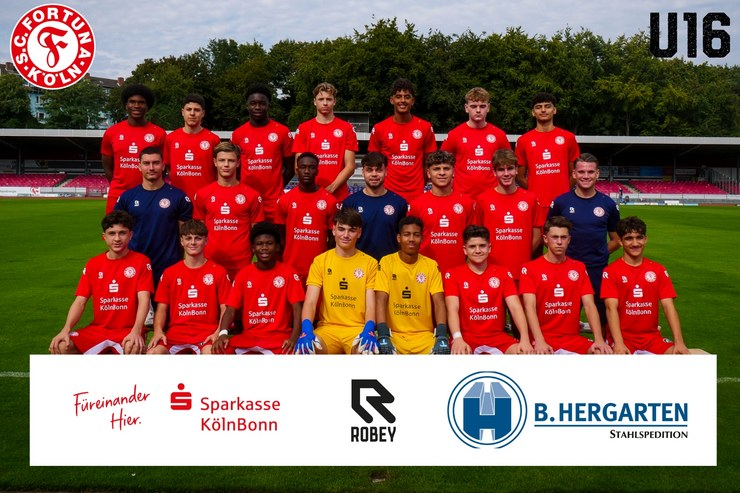

Unsere Jugendmanschaften
Die Jugendmannschaften von Fortuna Köln bilden seit vielen Jahren das Herzstück der Nachwuchsarbeit des traditionsreichen Kölner Vereins. Mit einem durchdachten Ausbildungskonzept und engagierten Trainern werden hier junge Talente systematisch gefördert – von den Bambinis bis zur U19. Die Nachwuchsteams sind nicht nur sportlich ambitioniert, sondern auch ein wichtiger Bestandteil der Vereinsphilosophie: Disziplin, Teamgeist und Freude am Spiel stehen im Mittelpunkt. Viele Spieler schaffen über die Jugend den Sprung in die höheren Mannschaften und knüpfen dort an ihre ersten Erfolge an. Wer einen Blick auf die Zukunft des Fußballs in Köln werfen möchte, findet sie genau hier – in den Jugendteams der Fortuna.
